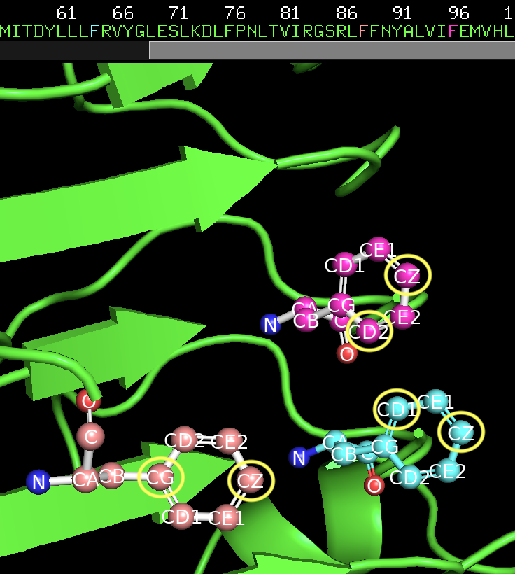
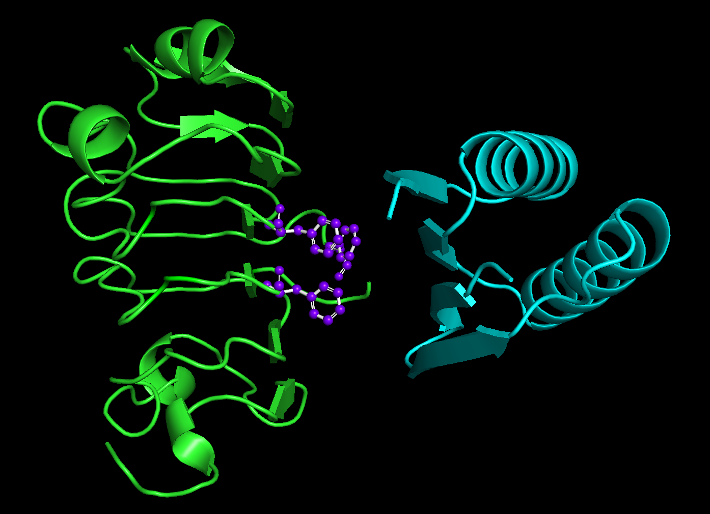

Protein-Protein Interface Design in RFdiffusion3¶
Before We Get Started…¶
This tutorial does not cover installing RFD3. Before continuing, you should make sure that RFdiffusion3 (RFD3) is installed and runnable on your system.
See the README for installation instructions. You will need to remember the path to the directory where you stored your checkpoint files.
Note
The instructions below assume that you have installed RFD3 via the pip commands. You may need to slightly modify how you run the calculations based on your setup.
Make sure you have activated any environment(s) you used to install RFD3.
RFD3 runs best on GPUs. It is suggested to follow this tutorial on an interactive GPU node if you have access to one.
You will need the file 4zxb_cropped.pdb. This is provided in foundry/models/rfd3/docs/input_pdbs. You can clone the foundry repository to easily access files related to this tutorial.
Lastly, we will be visualizing the outputs of the calculations presented in the tutorial using PyMOL. The visualization steps are completely optional, but if you would like to follow along you will need to have PyMOL installed.
Learning Objectives¶
In this tutorial, we will design a binder for the human insulin receptor to explore the settings available in RFD3 that are useful in protein-protein interface (PPI) design.
Setup¶
Create a directory named rfd3_ppi_tutorial and cd into it:
mkdir rfd3_ppi_tutorial && cd rfd3_ppi_tutorial
This is where you will be storing the files related to this tutorial.
If you would like to compare your outputs against those generated by the authors of this tutorial, you can find pre-generated output files in foundry/models/rfd3/docs/tutorials/ppi_tutorial_files.
The ‘basic’ zip file contains outputs that did not use the setting discussed in Other Useful Settings section. The ‘fixed’ zip file has the outputs resulting from using the select_fixed_atoms option.
There is also a pre-made YAML file available in foundry/models/rfd3/docs/tutorials/ppi_tutorial_files. We recommend following the tutorial to create this file yourself to better understand the RFD3 options that are relevant to PPI design.
Creating the YAML file¶
In this tutorial, we will be briefly describing each of the settings we will be using for this example binder design project.
Using your editor of choice, open a new file called
ppi_tutorial.yaml. This is where we will be storing all of the settings that tell RFD3 the type of designs we would like to make.Our calculation needs a name. For this tutorial, we will only be including one example calculation, but your YAML file could have several. A name allows you (and RFD3) to differentiate them. Since we are designing binders for the human insulin receptor, let’s just call it
insulinr:insulinr:
Everything that comes after this should be indented to show that it’s part of this
insulinrcalculation. You will want to use spaces, not the tab character. If a tab character (\t) is found in the file, RFD3 will crash.Tell RFD3 where to find your input file:
input: /path/to/4zxb_cropped.pdb
This file was directly cropped from the 4zxb structure that can be found in the RSCB PDB library. If you visualize the cropped structure against the full one from the RSCB library, they may not appear to be exactly the same structure. However, if you align the two you will get an RMSD of 0.0.
The
contigstring is the main way you can tell RFD3 what portions of your input structure you want defined and what portions you want preserved from your input structure.contig: 40-120,/0,E6-155
The different sections of the
contigstring are separated by commas. Here’s what each section is telling RFD3:40-120specifies that we want RFD3 to design a new peptide chain that is between 40 and 120 residues long/0is how a chain break is specified in RFD3.E6-155is the portion of the input structure that we are keeping in our final output. The letter corresponds to the chain label in the input PDB and the starting and ending residues are included in the final structure. If you do not include the chain label, then RFD3 would just design a peptide chain between 6 and 155 residues in length.
We can also specify the overall number of residues in our final structure:
length: 190-270
This is not absolutely necessary for this calculation as we only have one designed portion of our structure. Our
contigstring already enforces that the length of the final structure is between 190 and 270 residues long as the portion of the input structure we are using is 150 residues long. However, this becomes important when you have several designed sections of your protein that can have random lengths.Specifying ‘hotspots’ in your structure is a way to tell RFD3 which portions of your input structure should be close to the designed binder. More specifically, RFD3 was trained to produce structures where the hotspots will typically be at most 4.5 Å to any heavy atom on the binder. Typically the hotspot residues are a subset of the residues that are important to the function of the protein, e.g. the catalytic residues. Choosing these residues will require some scientific intuition, a thorough literature search, and some experimenting.
Hotspots are specified by naming both the residue and the specific atoms within the residue that you want closest to the designed structure:
select_hotspots: E64: CD2,CZ E88: CG,CZ E96: CD1,CZ

The hotspot residues along with the specific target atoms circled in yellow.¶
Note
The residues whose atoms were selected as hotspots were specified in our
contigstring. This is necessary so that RFD3 is ‘aware’ of these residues.Next we need to add information about our ORI token. This token specifies where we want the center of mass of our designed protein to be. Unless you know where you want to place the ORI token for your specific design needs, it is often easiest to have RFD3 infer the ORI placement based on the chosen
hotspots:infer_ori_strategy: hotspots
This setting will place the ORI token 10Å outward from the center of mass of the
hotspots. The center of mass of the diffused region will typically be within 5Å of the ORI token.There is a setting in RFD3,
is_non_loopythat, if set totrue, will cause fewer loops to be in your structure. It’s recommended to use this setting for PPI design tasks in RFD3, let’s add it to our YAML file:is_non_loopy: true
Save your file and close it. If you run the file now, your outputs should be similar to what is stored in
basic.zip.
{kind=link}
Other Useful Settings¶
This section provides other settings that are useful for protein-protein binder design tasks, but you may or may not need depending on your specific project.
There is a setting for allowing structural flexibility while keeping the sequence fixed in the input structure, for example:
select_fixed_atoms: E25: [] E26: BKBN E27: CA,CB,OG
Here, an empty list indicates that all atoms are flexible,
BKBNkeeps the backbone atoms fixed while allowing side chain atoms to move, and for the last residue, specific atoms are fixed in place while allowing the others to move. Feel free to try adding this to your YAML file and see how your outputs change.Including this setting will give you structures similar to what is in
fixed.zip.
Running RFD3¶
To actually run RFD3 you need to know:
the directory you want the outputs to be stored in
the path to the YAML (or JSON) file that stores the specific settings for the calculation
the location of your checkpoint files
Once you have these three things you can run something like this from the command line:
rfd3 design out_dir=ppi_tutorial_outputs/0 inputs=ppi_tutorial.yaml ckpt_path=/path/to/your/checkpoint/files/rfd3_latest.ckpt
Your output files will be placed in a new directory ppi_tutorial_outputs/0. Your output files will be named ppi_tutorial_insulinr_0_model_n.cif.gz where n is the number of the design. ppi_tutorial comes from the name of the YAML file and insulinr comes from the name you gave your calculation in the YAML file.
Note
You may see several warning messages when you run RFD3, these should not interfere with the calculation.
Analyzing the Outputs¶
You should end up with 8 designs, numbered 0-7, each with its own .cif.gz and .json file. If you want to adjust the number, add the configuration option diffusion_batch_size to your rfd3 design command.
The JSON file has many details about your diffusion run, including the options in the YAML file you created. The compressed CIF file contains information about the final diffused structure that you can easily visualize with tools like PyMOL.
Your results should look something like this:
{kind=link}

Green is the original input structure while blue is the designed binder. The hotspot residues are purple and represented as ball and sticks.¶
You’ll notice that the binders are always on the side of the input structure closest to the hotspots.
The lengths of the designed binders are all also between 40 and 120 amino acids long. However, you’ll also notice that they are all the same length!
This is because RFD3 runs batched inference calculations. All of the calculations in a single ‘batch’ will have the same randomly sampled length, while designs from other batches will have different lengths. If you want to change the number of batches, you will want to add the setting n_batches to your run rfd3 command.
What’s Next?¶
For your actual projects, you would want to filter the designed structures based on metrics relevant to your design task. Then, even though RFD3 outputs come with a sequence, it is recommended to still use sequence design tools (MPNN) to redesign the sequence. Finally you will want to see if the sequence refolds into a similar structure as was predicted by RFD3 using tools like RosettaFold3.
If you are working on a PPI design project, Designability vs. Diversity shows how different settings impact the designability of RFD3-produced structures in a PPI benchmark.
Feel free to go through the other tutorials and other files provided in the documentation.
References and Further Reading¶
For more information on the different inference settings in RFD3, see input.md
For more information on the example used here, see De novo design of protein structure and function with RFdiffusion by Joeseph L. Watson, et. al.
A more thorough discussion of the settings and configuration options in RFD3 can be found here